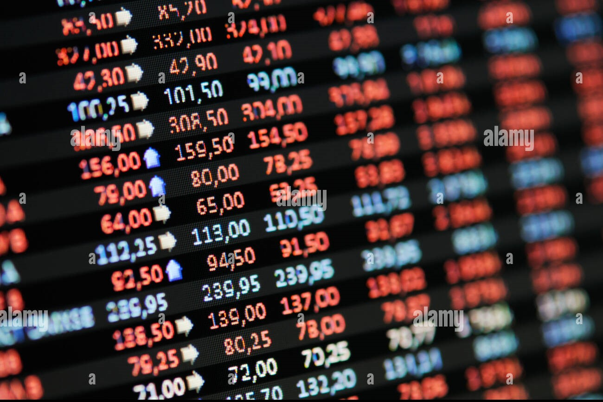
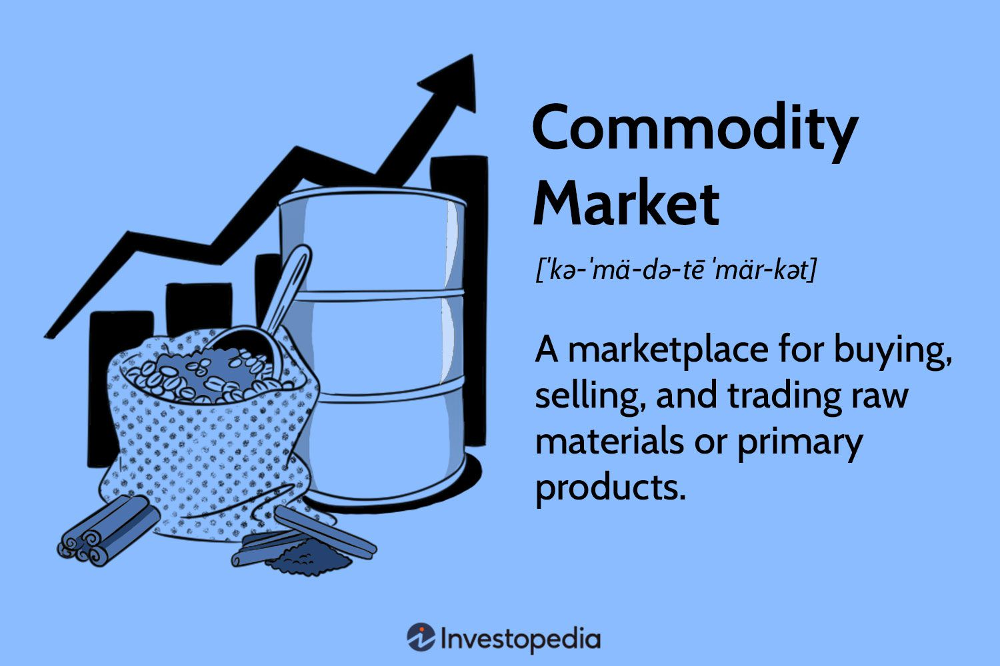
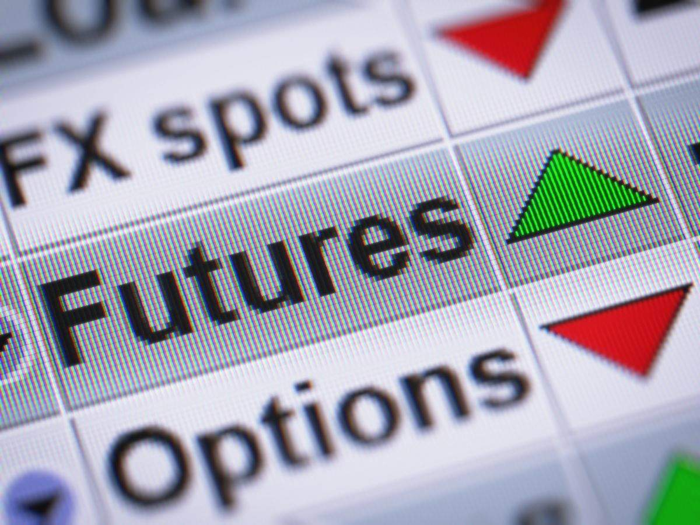

Unlock the World of Stock: Insights and investments Wisdom. Dive in!
For expolore more abour stock, please click on to LearnMore Tab
Stocks

Stocks, also known as shares or equities, represent ownership in a corporation or company. When you buy stocks, you are essentially purchasing a portion of that company, and you become a shareholder. This ownership entitles you to certain rights within the company, such as voting on important decisions and potentially receiving a share of the company's profits in the form of dividends.
Here are some key points to understand about stocks:
1. Ownership: When you buy a company's stock, you own a share of that company. The number of shares you own determines your ownership stake in the company.
2. Dividends: Some companies pay dividends to their shareholders, which are a portion of the company's profits distributed to investors. Not all stocks pay dividends, and the amount can vary.
3. Capital Gains: Investors can profit from stocks by selling them at a higher price than the purchase price. The difference between the buying and selling price is known as a capital gain.
4. Stock Exchanges: Stocks are bought and sold on stock exchanges, such as the New York Stock Exchange (NYSE) or the Nasdaq. These exchanges provide a platform for investors to trade shares of publicly traded companies.
5. Risk and Volatility: Investing in stocks carries risks, as their prices can fluctuate significantly over time. The value of a stock can go up or down based on various factors, including company performance, economic conditions, and market sentiment.
6. Types of Stocks: There are different types of stocks, including common stocks and preferred stocks. Common stockholders have voting rights and may receive dividends, while preferred stockholders typically have a fixed dividend but often do not have voting rights.
7. Stock Indices: Stock market indices, like the S&P 500 or the Dow Jones Industrial Average, track the performance of a group of stocks and provide an overall view of how the stock market is doing.
8. Long-Term Investment: Many investors buy stocks as a long-term investment, aiming to build wealth over time. However, short-term trading also occurs for those seeking to profit from short-term price fluctuations.
9. Diversification: Diversifying your stock portfolio by investing in different companies and industries can help spread risk and reduce the impact of a poor-performing stock.
Investing in stocks can be a way to participate in the growth and success of businesses, but it's important to conduct thorough research, consider your financial goals, and be aware of the associated risks before investing in the stock market. Many individuals choose to invest in stocks through brokerage accounts or retirement accounts like IRAs and 401(k)s. It's also common for people to seek advice from financial advisors or do-it-yourself research to make informed investment decisions.
Commodities

Commodities are an integral part of the global economy, playing a crucial role in our daily lives, even if we don't always realize it. From the coffee you brew in the morning to the gasoline that powers your car, commodities are the raw materials and goods that make the world go round. In this beginner's guide, we'll explore what commodities are, how they work, and why they matter.
What Are Commodities?
Commodities are tangible goods that are standardized and interchangeable with other goods of the same type. They can be categorized into two main types: hard commodities and soft commodities.
1. Hard Commodities: These include natural resources such as oil, gold, silver, and industrial metals like copper and aluminum. Hard commodities are typically mined or extracted from the earth.
2. Soft Commodities: Soft commodities encompass agricultural products like wheat, corn, soybeans, coffee, and cotton. These are grown rather than extracted.
Why Are Commodities Important?
Commodities are essential for several reasons:
1. Economic Indicator: The prices of commodities can serve as leading indicators for the state of the economy. For instance, rising oil prices may indicate increased global demand, while falling prices could signal a slowdown.
2. Diversification: Investing in commodities can be a way to diversify your investment portfolio. Unlike stocks and bonds, commodities often move independently of traditional financial markets, providing a hedge against market volatility.
3. Global Trade: Commodities are the backbone of international trade. Countries rely on the export and import of commodities to fuel their economies and meet the demands of their populations.
4. Consumer Impact: Changes in commodity prices can directly impact consumers. For example, an increase in the price of wheat can lead to higher bread prices at the grocery store.
How Are Commodities Traded?
Commodities can be traded in various ways:
1. Futures and Options: Most commodity trading occurs on futures and options exchanges. These contracts allow traders to speculate on future price movements without owning the physical commodity.
2. Physical Markets: Some traders buy and sell physical commodities directly. For example, a coffee roaster may purchase coffee beans from a supplier.
3. Exchange-Traded Funds (ETFs): ETFs offer a way for investors to gain exposure to commodity price movements without trading futures contracts or taking physical delivery of the commodity.
Risks and Volatility
Commodity markets can be highly volatile due to factors like weather, geopolitical events, and changes in supply and demand. Investors should be aware of the risks involved and conduct thorough research before trading or investing in commodities.
Conclusion
Commodities are the lifeblood of our global economy, impacting everything from the cost of living to investment portfolios. Whether you're an investor looking to diversify your holdings or simply curious about how the world works, understanding commodities is a valuable piece of knowledge. Keep an eye on commodity markets, as they can provide valuable insights into the state of our ever-changing world.
Future & Options

Futures and Options, commonly referred to as F&O, are financial derivatives that play a pivotal role in modern financial markets. They offer investors and traders unique opportunities to hedge risks, speculate on price movements, and enhance portfolio strategies. In this comprehensive guide, we'll dive into the world of F&O, exploring what they are, how they work, and their significance in the financial landscape.
What Are Futures and Options?
Futures and Options are types of financial contracts, known as derivatives, derived from underlying assets such as stocks, commodities, currencies, or indices. They provide a way to buy or sell these assets at a specified price on a future date.
1. Futures Contracts: A futures contract obligates the buyer to purchase, and the seller to sell, a specified asset at a predetermined price on a future date. Futures contracts are standardized and typically traded on organized exchanges.
2. Options Contracts: Options give the holder the right (but not the obligation) to buy (call option) or sell (put option) an underlying asset at a predetermined price (strike price) within a specified time frame.
Key Concepts in F&O:
To understand F&O, it's important to grasp some fundamental concepts:
1. Leverage: F&O contracts allow traders to control a large position with a relatively small amount of capital. This amplifies both potential gains and losses.
2. Hedging: Investors use F&O contracts to hedge against price fluctuations in their portfolios. For example, a stockholder concerned about a market downturn can use index futures to offset potential losses.
3. Speculation: Traders can use F&O to speculate on price movements. They can profit from both rising (going long) and falling (going short) markets.
4. Expiration Dates: F&O contracts have expiration dates, after which they become worthless. Traders must either close their positions or roll them over to a future contract.
Significance of F&O in the Financial World:
Futures and Options serve several important functions:
1. Price Discovery: F&O markets provide valuable price information for underlying assets. The collective actions of traders help determine fair market prices.
2. Risk Management: F&O contracts enable businesses to manage risks associated with volatile commodity prices, interest rates, and foreign exchange rates.
3. Portfolio Diversification: Investors can diversify their portfolios by including F&O contracts, potentially reducing overall risk.
4. Liquidity: F&O markets are highly liquid, allowing for easy entry and exit.
Risks Associated with F&O:
While F&O offer numerous advantages, they also come with risks, including:
1. Leverage Risk: High leverage can lead to substantial losses if market movements go against your position.
2. Time Decay: Options contracts lose value as they approach their expiration date, impacting their profitability.
3. Market Risk: F&O prices are influenced by a wide range of factors, including economic data, geopolitical events, and market sentiment.
Conclusion:
Futures and Options are powerful financial instruments that can help investors and traders manage risk, speculate on market trends, and diversify portfolios. However, they require a deep understanding of the markets and disciplined risk management. Whether you're a seasoned trader or a beginner, incorporating F&O into your financial strategy can open up a world of possibilities in the dynamic realm of finance.